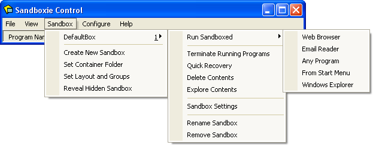

Getting Started Part Two
Part Two: Run Web Browser
To launch your Web browser, find the desktop shortcut icon for Sandboxed Web Browser and click it:

Alternatively, right-click the Sandboxie Control tray icon, and navigate the popup Tray Icon Menu to select the Run Web Browser action.

A third option is via the Sandbox Menu in the main window of Sandboxie Control:

Your Web browser should come up sandboxed. You can tell that a program is sandboxed because its window title bar contains additional Sandboxie [#] indicators: ((NOTE: Newer browsers may not show the # in the title bar, however if you hover your mouse along the edges of the window, it will turn yellow.)
(Note: In some computer systems, Sandboxie starts the wrong program when you select Run Web Browser. If this is the case for you, see Frequently Asked Questions to fix this.)
The sandboxed program should appear in the main window of Sandboxie Control:

The window displays the list of programs that are currently running sandboxed under the supervision of Sandboxie. Initially there is just one sandbox, DefaultBox, however, more sandboxes can be created; see the Create New Sandbox command in the Sandbox Menu.
The picture above shows Sandboxie is running three programs. The first, iexplore.exe, stands for Internet Explorer, as this tutorial assumes Internet Explorer is the Web browser in use. If the default Web browser in your system is Firefox, or Opera, then you would see firefox.exe or opera.exe, respectively, as the first program running in the sandbox.
The screenshot shows two more programs are running, SandboxieRpcss.exe and SandboxieDcomLaunch.exe. These support programs are part of Sandboxie. If they are needed, they will be automatically started, without any explicit action on your part. See Service Programs.
When Sandboxie is actively running programs in any of the sandboxes, the Sandboxie tray icon (at the corner of the screen) displays red dots:
The tutorial continues in Getting Started Part Three.